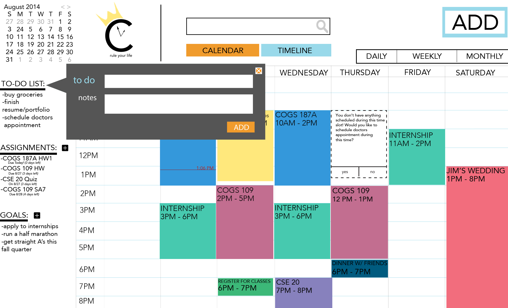
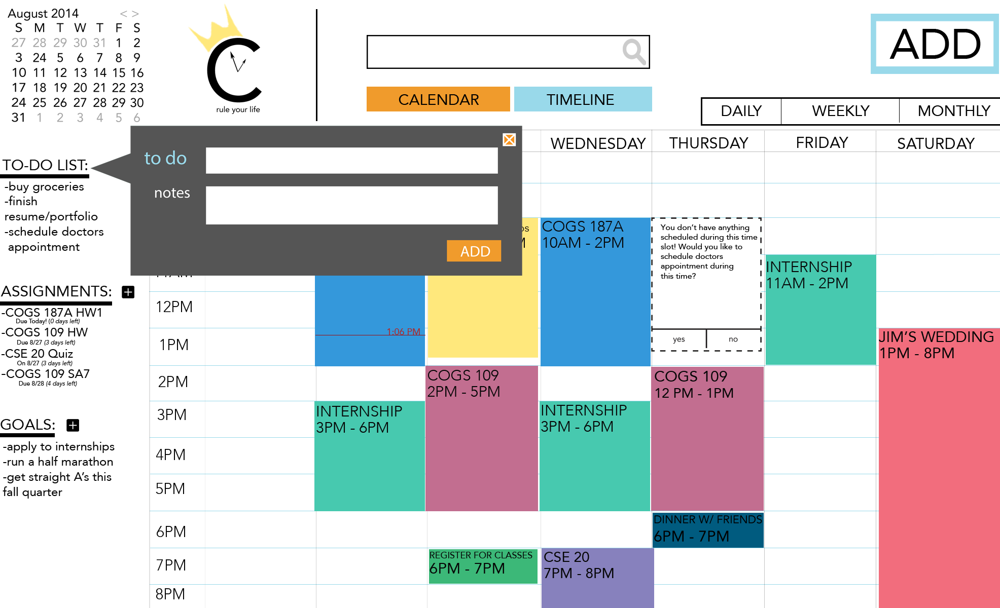

GOALS


The user can add their long-term and short term goals, such as training to run a marathon throughout the quarter, or even life-long dream of becoming a doctor to help people.
CROWN will suggest slots of free time to work on their goals to maximize their free time. (You don't have anything scheduled during this slot! Would you like to apply to internships during this time?)

The user can add CROWN's suggestions into their calendar to know and plan to work on their goal during the suggested time period.
ASSIGNMENTS & TESTS
TO - DO LIST
 

The user can add to a list of assignments and tests to remind themselves of when it is due. Students can also input the amount of time they think they need to study for the test, and CROWN will offer suggestions on when to start studying based on the amount of free time the user has and the due date of the assignment or test.
The user can add to a list of things to do, and CROWN will remind the user to remember to do these tasks in their calendar.
EVENT & CLASS


Students can add their events and repeating classes in their calendar and in our new feature, the timeline, which utilizes the importance and priority that the user puts for their events.
TIMELINE
CROWN offers the timeline view for each student's personal calendar, which is a new way to visually interpret time. We noticed that the traditional calendar view does not differentiate between important (exams and weddings) and less important events (repeating classes). However, important events should be given more attention and time and are often more urgent, but the traditional calendar view does not offer a way to visually interpret what is most urgent. Therefore, the different events on the timeline are created to be different sizes based on the importance. Also, the timeline offers a new way to see how close or far apart important events are, indicating whether or not the student needs to make a decision in light of knowing how many important events are approaching. For example, if a student saw that they had two exams and a wedding that were close together in the timeline, which means that there is little time in between each event, the student may decide to start studying for their exams earlier because they know they won't have time later with all their important events occurring.
The total number of priorities offered is 3. The first and lowest priority, indicated by a small square on the timeline, is for less important and repeating events. The second priority, indicated by the medium square, is for events that are slightly more important, such as small assignments due or events with friends. The third priority, indicated by the largest square, is for events that are extremely important that need attention, demand urgency, and demand a change in action. For example, if a student saw that a final, with the highest priority and is the first thing that pops out in the timeline view, was coming up soon, they would probably start studying for their final.
For our timeline view, CROWN offers a daily, weekly, and monthly view. In the daily view, all three kinds of priorities will be shown. In the weekly view, only the medium and high priority events will be shown, and the time will still remain static. This is to not only highlight only the important events that need attention, but also to prevent crowding of events. In the monthly view, only the high priority events will be shown to highlight only the extremely important events in the student's life.